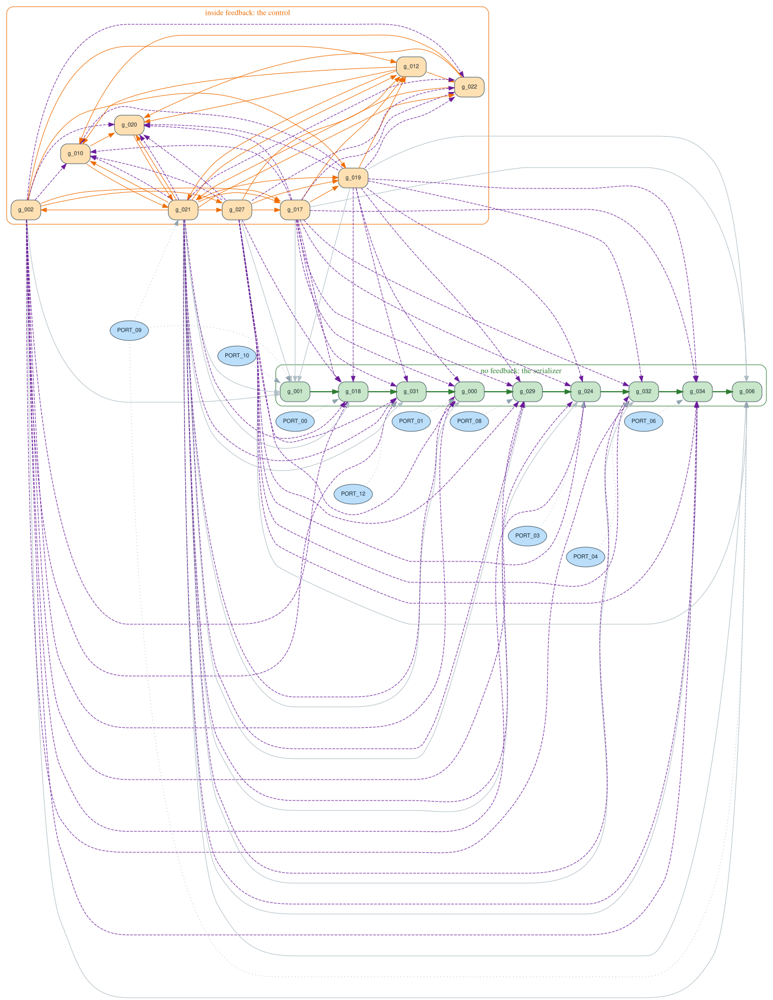
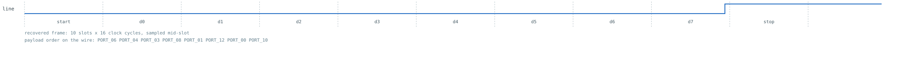

Reverse engineering an Agilex 3 netlist, walkthrough 03: uart_tx
A minimal 8N1 UART transmitter, synthesized for real by Quartus Prime Pro 26.1, blinded, and then taken apart twice — once structurally with headless HAL, once behaviourally by driving the netlist as a black box. The two halves never look at each other until the end, and then they have to agree. Every number and every picture below came out of the scripts sitting next to this file.
1. The design we are going to lose
The exercise only means something if the answer exists in advance. The RTL handed to Quartus is a textbook 8N1 transmitter: ten bit slots of sixteen clocks each, one start bit low, eight data bits least-significant first, one stop bit high.
[... the module header elided: ports clk, rst_n, tx_start, tx_data[7:0], tx,
tx_busy; parameter DIV_W = 4; localparams N_SLOTS = 10, BIT_W = 4 ...]
reg [DIV_W-1:0] baud_cnt; // prescaler
reg [BIT_W-1:0] bit_cnt; // frame position, 0..N_SLOTS
reg [N_SLOTS-1:0] shreg; // the serializer
reg busy; // the entire control FSM: two states
wire baud_tick = &baud_cnt;
wire frame_end = (bit_cnt == N_SLOTS[BIT_W-1:0]);
assign tx = shreg[0]; // the LSB of the shift register is the line
assign tx_busy = busy;
always @(posedge clk or negedge rst_n) begin
if (!rst_n) begin
baud_cnt <= {DIV_W{1'b0}};
bit_cnt <= {BIT_W{1'b0}};
shreg <= {N_SLOTS{1'b1}}; // idle line is high
busy <= 1'b0;
end
else if (!busy) begin
baud_cnt <= {DIV_W{1'b0}};
bit_cnt <= {BIT_W{1'b0}};
if (tx_start) begin
shreg <= {1'b1, tx_data, 1'b0};
busy <= 1'b1;
end
end
else begin
baud_cnt <= baud_cnt + 1'b1;
if (baud_tick) begin
shreg <= {1'b1, shreg[N_SLOTS-1:1]}; // shift right, fill 1
bit_cnt <= bit_cnt + 1'b1;
end
if (frame_end) busy <= 1'b0;
end
endCode verbatim; the explanatory comment lines between statements are dropped
here. Full commented source: design.v. The intended
behaviour, written before synthesis, is spec.md — it is the
answer key. Read it after section 6, or before you start if you only want the tour;
reading it in the middle spoils every step it would otherwise validate.
Four properties of this design are what make it worth a walkthrough:
- It has a datapath and a control path. Walkthrough 01 had feedback only; walkthrough 02 had control only. Here the shift register is pure dataflow with no feedback at all, and the counters and the flag are pure feedback. Telling those apart is the analysis.
- The two counters are the same width. Four bits each, on purpose. Any tool that separates registers by width will fail; only dataflow separates them.
- The bit period is not stored anywhere.
CLK_DIV = 2**DIV_W = 16is a compile-time parameter and the prescaler wraps by being four bits wide. There is no constant 16 in the netlist to find. Recovering "16" means counting flip-flops, or measuring. - It is observable. Unlike a 24-bit blinky, a UART shows you its whole state machine in 161 clock cycles through one pin. That makes the black-box half viable, and lets the two halves be genuinely independent.
2. Synthesis, export, and blinding
Same flow as the rest of the series: post-synthesis only, so no fitting, no placement and no I/O buffers.
# quartus/uart_tx.qsf
set_global_assignment -name FAMILY "Agilex 3"
set_global_assignment -name DEVICE A3CW135BM16AE6S
set_global_assignment -name TOP_LEVEL_ENTITY uart_tx
set_global_assignment -name VERILOG_FILE ../design.v
set_global_assignment -name PROJECT_OUTPUT_DIRECTORY output_files
set_global_assignment -name AUTO_SHIFT_REGISTER_RECOGNITION OFF
set_global_assignment -name AUTO_RAM_RECOGNITION OFF
set_global_assignment -name AUTO_DSP_RECOGNITION OFF
set_global_assignment -name ALLOW_SYNCH_CTRL_USAGE OFFThe last four lines are not cosmetic, and the .qsf's own comments say why: they
keep the export inside the primitive coverage that tools/hal_agilex has validated.
Without ALLOW_SYNCH_CTRL_USAGE OFF, Quartus maps "the counter parks at zero while
idle" onto the flip-flop's synchronous-clear pin, which is outside that coverage and makes the
export un-importable. The RTL was also written so that every next-state function has at most six
inputs, to keep Quartus out of the ALM's fracturable seven-input mode for the same reason.
quartus_syn uart_tx -c uart_tx
quartus_eda --simulation --format=verilog --tool=questasim \
--output_directory=simulation uart_tx -c uart_txThe export is uart_tx.vo, kept verbatim. Before
analysing anything, ask whether every cell in it is one you have semantics for:
python3 tools/hal_agilex inventory \
examples/agilex3_walkthroughs/03_uart_tx/uart_tx.vo"design_name": "uart_tx",
"device_name": "Altera A3CW135BM16AE6S Package MBGA896",
"gate_count": 40,
"histogram": { "tennm_ff": 18, "tennm_lcell_comb": 22 },
"status": "proven_under_assumptions",
"summary": "All 40 instances are tennm_ff or tennm_lcell_comb, each in a
configuration this package models and has validated against
the vendor export."Reformatted from
artifacts/inventory.json, which is the
full findings document.
proven_under_assumptions means the enumeration found nothing outside the modelled
set — and the document lists the assumptions it rests on, including one that is explicitly
not discharged: coverage is defined by tools/hal_agilex/primitives.py,
whose semantics were validated by simulating this export against the RTL it came from. It is a
statement about the netlist text, not about an execution. Everything downstream inherits it.
Import, then blind
python3 tools/hal_agilex import \
examples/agilex3_walkthroughs/03_uart_tx/uart_tx.vo \
-o examples/agilex3_walkthroughs/03_uart_tx/netlist.hal.v
python3 examples/agilex3_walkthroughs/03_uart_tx/anonymize.py \
examples/agilex3_walkthroughs/03_uart_tx/netlist.hal.v \
-o examples/agilex3_walkthroughs/03_uart_tx/netlist_anon.hal.vThe import rewrites the three things HAL's Verilog parser will not accept — tri1
nets, pin inversions (folded exactly into lut_mask) and unconnected pins — or
refuses. The blinding matters more here than in walkthrough 02, because Quartus's export keeps
the RTL's identifiers: netlist.hal.v still contains shreg[3],
baud_cnt, busy and a tx_data bus. A walkthrough that reads
the answer off the net names has not reverse engineered anything.
anonymize.py therefore produces
netlist_anon.hal.v: the module becomes
top, every port becomes a scalar PORT_nn (buses exploded — a bitstream
gives you pins, not vectors), every internal net a scalar n_nnn, every instance a
g_nnn, and the ordering is scrambled by a salted hash so neighbouring indices carry
no information either. Gate types, pin names and parameters are untouched; those are device
facts. The map is written to
netlist_anon.hal.v.map.json and is not
opened until section 8.
check.py simulates netlist.hal.v and
netlist_anon.hal.v side by side for 400 cycles of pseudo-random stimulus including
two asynchronous clears, driving each through its own port names, and requires zero mismatching
output samples.
3. First contact: the census
From here to section 6, nothing reads design.v, spec.md,
netlist.hal.v or the name map. The structural half runs from
analyze.py:
export HAL_BASE_PATH=/work/build HAL_PY_PATH=/work/build/lib PYTHONPATH=/work/build/lib
python3 examples/agilex3_walkthroughs/03_uart_tx/analyze.py \
--repo . -o examples/agilex3_walkthroughs/03_uart_tx/artifactsOne run writes every artifacts/0N_*.txt quoted below, the register graph, and
artifacts/analysis.json with the
machine-readable conclusions that check.py asserts on. It loads the netlist through
hal_agilex.hal_adapter, which attaches the ALM semantics per gate after loading and
refuses anything outside the validated coverage:
elaborate: {'elaborated': 22, 'checked_ff': 18, 'constants': 2,
'types': {'HAL_GND': 1, 'HAL_VCC': 1,
'tennm_ff': 18, 'tennm_lcell_comb': 22}}The line analyze.py prints, reflowed; the same numbers are the
elaborate block of
analysis.json. Nothing was refused. This step
is not optional. tennm_lcell_comb carries no lut_config in the gate
library, so a tool that loads the netlist and asks HAL for Boolean functions gets empty ones —
and will happily analyse a design whose combinational logic it cannot see.
4. Half A — structure
Seven steps, all from the one analyze.py run above. Each step gives the file it
wrote, that file's real content, and the reasoning that turns it into a claim — including what
the claim does not cover.
1 Count what you have
cat examples/agilex3_walkthroughs/03_uart_tx/artifacts/01_stats.txtdesign name : top
gate library : AGILEX_TENNM
gates : 42
nets : 53
modules : 1
gate types:
tennm_lcell_comb 22
tennm_ff 18
HAL_GND 1
HAL_VCC 1
primary inputs (11): PORT_00 PORT_01 PORT_02 PORT_03 PORT_04 PORT_06 PORT_08 PORT_09 PORT_10 PORT_11 PORT_12
primary outputs ( 2): PORT_05 PORT_07
module tree:
top_module (id 1, type 'top') gates=42 submodules=0The port numbering is already informative in a way that has nothing to do with the design:
PORT_05 and PORT_07 are outputs sitting in the middle of the input
numbering, because the anonymiser sorted ports by a salted hash of their original names. Eleven
in, two out. Two of the eleven inputs will turn out to be the clock and the reset, which leaves
nine, and there is no way yet to know which.
.vo; HAL
reports 42 gates. The difference is HAL_GND and
HAL_VCC, which do not exist on the device: HAL's Verilog parser needs a gate to
materialise the 1'b0/1'b1 literals the export uses, so
AGILEX_TENNM.hgl declares two with a deliberately un-vendor-like prefix. When you
count gates, two of them are bookkeeping.
2 Group every flip-flop control pin by the net that drives it
cat examples/agilex3_walkthroughs/03_uart_tx/artifacts/02_clock_reset.txtEvery flip-flop control pin, grouped by the net that drives it.
clk:
PORT_02 x18 g_000 g_001 g_002 g_006 g_010 g_012 g_017 g_018 g_019 g_020 g_021 g_022 g_024 g_027 g_029 g_031 g_032 g_034
clrn (asynchronous clear):
PORT_11 x18 g_000 g_001 g_002 g_006 g_010 g_012 g_017 g_018 g_019 g_020 g_021 g_022 g_024 g_027 g_029 g_031 g_032 g_034
ena:
1'b1 x8 g_001 g_002 g_006 g_012 g_017 g_019 g_021 g_027
n_038 x7 g_000 g_018 g_024 g_029 g_031 g_032 g_034
n_012 x3 g_010 g_020 g_022
[... 3 closing lines of the file elided: the script's own note that one clock
net and one clear net across 18 flip-flops means a single clock domain
with one asynchronous reset, and that nothing here needs a CDC analysis ...]clk pins: a single clock domain, so no CDC
analysis is needed and every later step may assume one time base. One net on all 18
clrn pins: one asynchronous reset — and because clrn is the
primitive's asynchronous active-low clear, the polarity and the reset value 0 come from
the gate library rather than from a guess.
The enable column is the first real structural signal. Three groups, not one. A clock enable is design intent leaking through synthesis: something in the RTL said "only update this when…". Eight flops are always enabled; seven share one gated enable net; three share another. Seven and three are odd numbers — neither is a plausible register width on its own, which is a hint that enable grouping alone will not partition this design.
n_038 and n_012 compute. It also does not tell you which of the nine
remaining inputs is a clock enable source, a data bit, or a request. The pin table narrows; it
does not conclude.
3 Find the feedback: strongly connected components of the gate graph
cat examples/agilex3_walkthroughs/03_uart_tx/artifacts/03_gate_sccs.txt$ graph_algorithm.get_connected_components(graph, strong=True, min_size=2)
3 non-trivial strongly connected component(s) in the GATE graph:
SCC 0: 19 gates, 9 of them flip-flops
flip-flops: g_002 g_010 g_012 g_017 g_019 g_020 g_021 g_022 g_027
all gates : g_002 g_007 g_010 g_011 g_012 g_013 g_015 g_016 g_017 g_019 g_020 g_021 g_022 g_023 g_025 g_026 g_027 g_028 g_036
SCC 1: 2 gates, 1 of them flip-flops
flip-flops: g_001
all gates : g_001 g_030
SCC 2: 2 gates, 1 of them flip-flops
flip-flops: g_006
all gates : g_006 g_038
flip-flops in NO non-trivial SCC (7): g_000 g_018 g_024 g_029 g_031 g_032 g_034
[... 6 closing lines of the file elided: the script's own warning that the big
component is not "one register", because the gate graph merges everything
mutually reachable and the fine structure has to come from the register
graph below ...]The answer splits the design into three shapes. One nineteen-gate component containing nine flip-flops: mutual feedback, so this is the control. Two two-gate components, each a single flip-flop with a single cell — a flop that can hold its own value. And seven flip-flops in no cycle at all, which is the strongest single statement in the whole structural half: a register outside every feedback loop cannot count, cannot accumulate and cannot hold a value that depends on its own history. It can only pass a value along.
Now cross-reference step 2. The seven acyclic flops are exactly the seven that share the enable net
n_038. Two independent structural facts pointing at the same set is
worth more than either alone.
The two size-2 components are the same trap in miniature:
g_001 and
g_006 look like little state machines because each has a self-loop through one
cell. Step 5 will show they are the head and the tail of the same chain as the acyclic seven —
they hold their value through a feedback multiplexer while the other seven hold theirs through
the ena pin. Two ways of writing the same "keep what you have", one of which a
cycle search sees and one of which it does not.
4 Build the register graph, pin by pin
cat examples/agilex3_walkthroughs/03_uart_tx/artifacts/04_register_graph.txtFor every flip-flop: the flip-flops and primary inputs its D pin depends
on (through combinational cells only), and the same for its ENA pin.
'self' marks a flop whose own output is in its next-state cone -- it can
hold or count; a flop without it can only be loaded from somewhere else.
FF self D depends on (FFs) D <- PI ENA
----------------------------------------------------------------------------------------------------
g_000 . g_021,g_031 PORT_01 n_038 <- g_002,g_017,g_019,g_021,g_027+PORT_09
g_001 self g_001,g_002,g_017,g_019,g_021,g_027 PORT_09,PORT_10 1'b1
g_002 self g_002,g_021 - 1'b1
g_006 self g_002,g_006,g_017,g_019,g_021,g_027,g_034 PORT_09 1'b1
g_010 self g_010,g_012,g_021,g_022 - n_012 <- g_002,g_017,g_019,g_021,g_027
g_012 self g_002,g_012,g_017,g_019,g_021,g_027 - 1'b1
g_017 self g_002,g_017,g_021,g_027 - 1'b1
g_018 . g_001,g_021 PORT_00 n_038 <- g_002,g_017,g_019,g_021,g_027+PORT_09
g_019 self g_002,g_017,g_019,g_021,g_027 - 1'b1
g_020 self g_010,g_012,g_020,g_021,g_022 - n_012 <- g_002,g_017,g_019,g_021,g_027
g_021 self g_010,g_012,g_020,g_021,g_022 PORT_09 1'b1
g_022 self g_012,g_021,g_022 - n_012 <- g_002,g_017,g_019,g_021,g_027
g_024 . g_021,g_029 PORT_03 n_038 <- g_002,g_017,g_019,g_021,g_027+PORT_09
g_027 self g_002,g_021,g_027 - 1'b1
g_029 . g_000,g_021 PORT_08 n_038 <- g_002,g_017,g_019,g_021,g_027+PORT_09
g_031 . g_018,g_021 PORT_12 n_038 <- g_002,g_017,g_019,g_021,g_027+PORT_09
g_032 . g_021,g_024 PORT_04 n_038 <- g_002,g_017,g_019,g_021,g_027+PORT_09
g_034 . g_021,g_032 PORT_06 n_038 <- g_002,g_017,g_019,g_021,g_027+PORT_09d pin through
combinational cells only, stopping at another flip-flop's output or at a net with no driver
inside the design. The result is the set of registers and primary inputs the next value actually
depends on. Do the same for the ena pin, unless the enable is a constant.
Three shapes are visible without any further processing. Nine rows have no
self and
name exactly one non-g_021 flop in their D column plus one primary input — a stage
that is either loaded from outside or handed a value by exactly one predecessor. Eight rows have
self and reference only each other. And g_021 appears in the D column
of every single row, which is what a global mode bit looks like.

analyze.py as artifacts/register_graph.dot and rendered with
dot -Tsvg. Green box: the flops with no feedback, drawn with their green D edges,
which form a single line. Orange box: the flops inside feedback. Dashed purple edges are enable
dependencies (register → the enable pin of another register); dotted grey edges come from the
blue primary-input ellipses. The green line running through the green box is the whole
conclusion of step 5, before step 5 has run.5 Split the register graph: control versus datapath
cat examples/agilex3_walkthroughs/03_uart_tx/artifacts/05_register_sccs.txtThe same edges as step 04, but between flip-flops only, and with the
self-loops removed. Strongly connected components of THAT graph:
component 0: 9 flop(s) g_002 g_010 g_012 g_017 g_019 g_020 g_021 g_022 g_027
component 1: 1 flop(s) g_000
[... components 2..9, one flop each: g_001, g_006, g_018, g_024, g_029,
g_031, g_032, g_034 ...]
=> 9 flop(s) sit inside feedback: g_002 g_010 g_012 g_017 g_019 g_020 g_021 g_022 g_027
=> 9 flop(s) do not: g_000 g_001 g_006 g_018 g_024 g_029 g_031 g_032 g_034
A register that is not inside any feedback loop cannot count and cannot
hold a value that depends on its own history through other registers.
It can only pass a value along. Nine of them, in one clock domain, is
a serializer -- and the edges between them give the order:
chain of 9: g_001 -> g_018 -> g_031 -> g_000 -> g_029 -> g_024 -> g_032 -> g_034 -> g_006
head g_001: D depends on primary input(s) PORT_09,PORT_10 and no datapath flop
tail g_006: drives the netlist output
Per-stage primary inputs along the chain (the parallel load port):
g_001 <- PORT_09,PORT_10
g_018 <- PORT_00
g_031 <- PORT_12
g_000 <- PORT_01
g_029 <- PORT_08
g_024 <- PORT_03
g_032 <- PORT_04
g_034 <- PORT_06
g_006 <- PORT_09With those two changes the picture inverts: the nine-flop blob stays, but the two size-2 components of step 3 dissolve, and now nine flops are outside all feedback instead of seven. Nine registers in one clock domain that can only pass values along is a serializer, and — this is the part worth pausing on — the graph gives you its order for free. Each stage names exactly one predecessor, so the chain is forced: there is no heuristic and no tie to break.
Eight of the nine stages also take a primary input directly into their D cone. A shift register whose every stage has a private input is a parallel-load shift register, so those eight inputs are one word, presented at load time. The chain order is therefore also the transmission order, up to the direction of travel.
- The load table has nine entries, not eight, and
PORT_09appears twice — once at the tail on its own, once at the head next toPORT_10. Structure cannot tell you thatPORT_09is a request rather than a ninth data bit. The cone walk reports what the D pin depends on, and a stage whose load value is a constant still depends on the load condition. Half B settles this from the outside in one probe. - Nine stages is not nine bits of anything you can name yet. It is nine flip-flops. Whether the word being shifted is eight bits, nine, or ten with one deleted is not decidable here — see section 6.
6 Take the control blob apart
cat examples/agilex3_walkthroughs/03_uart_tx/artifacts/06_counters.txt[... 2 opening lines elided: "The feedback blob from step 05 is nine flops,
not one register. Take it apart in two moves." ...]
(a) MINIMUM FEEDBACK VERTEX. Remove one flop at a time and ask whether
the rest is still cyclic. A flop whose removal makes the whole blob
acyclic is carrying ALL of the feedback: that is a control flag, not
a datapath bit.
without g_002 -> still cyclic
[... five more rows, all "still cyclic": g_010, g_012, g_017, g_019, g_020 ...]
without g_021 -> ACYCLIC
without g_022 -> still cyclic
without g_027 -> still cyclic
=> feedback flop(s): g_021
(b) THE ENABLE NETS. With the flag set aside, 8 flops remain and the
graph between them is acyclic. Which of them gate the others?
g_010 ena = n_012 computed from g_002 g_017 g_019 g_027
g_020 ena = n_012 computed from g_002 g_017 g_019 g_027
g_022 ena = n_012 computed from g_002 g_017 g_019 g_027
=> 4 flop(s) appear in the enable of other flops: g_002 g_017 g_019 g_027
=> 4 flop(s) are the ones being gated (plus whatever shares their
dependency structure): g_010 g_012 g_020 g_022
[... 3 lines elided: "A register whose enable is a function of a second
register only advances when that second register says so. The gating
group is the fast counter (the prescaler); the gated group is the slow
one." ...]
(c) BIT ORDER inside each group. In a ripple/carry counter, bit i's
next state depends on bits 0..i-1 and on itself, and on nothing
above it. Sorting each group by the size of its in-group D-support
therefore recovers the bit significance:
fast counter, LSB first:
bit 0 g_002 D depends on (only itself and the flag)
bit 1 g_027 D depends on g_002
bit 2 g_017 D depends on g_002 g_027
bit 3 g_019 D depends on g_002 g_017 g_027
slow counter, LSB first:
bit 0 g_012 D depends on (only itself and the flag)
bit 1 g_022 D depends on g_012
bit 2 g_010 D depends on g_012 g_022
bit 3 g_020 D depends on g_010 g_012 g_022
Both groups are 4 bits wide. Nothing about their WIDTH
distinguished them -- only the dataflow did.(a) Which flop is the mode bit? Delete one vertex at a time and re-test the blob for cycles. Exactly one deletion makes it acyclic:
g_021. That is a minimum
feedback vertex set of size one, and it says something strong — every loop in the control passes
through this single flop. A datapath bit cannot have that property; a global "we are doing a
thing now" flag is the only shape that does. Note also that g_021 was already in
every row of step 4's D column, so two different tests agree.
(b) Which of the rest gates which? With the flag set aside the remaining eight form an acyclic graph, and the enable pins break the tie:
g_002,
g_017, g_019 and g_027 appear inside the enable cone of
other registers, and g_010, g_012, g_020,
g_022 do not. A register whose enable is a function of a second register only
advances when that second register says so. The gating group is the prescaler; the gated group
is the slow counter. Widths would never have separated these — they are both four bits, on
purpose.
(c) Which bit is which? In a ripple counter, bit i's next state reads bits 0…i−1 and itself and nothing above. Sorting by the size of the in-group D-support therefore recovers significance directly. Both groups come out as a clean 0,1,2,3 staircase, which is also a consistency check: if a group were not a counter, the supports would not nest.
n_012 enable — g_010,
g_020, g_022 — and step 2's pin table says so too. The fourth member of
the slow group, g_012, has ena = 1'b1; the script places it there
because it is what is left over after removing the gating four. That is a weaker argument than
the other three rows, and the artifact's own wording admits it ("plus whatever shares their
dependency structure"). It happens to be right — g_012 gates itself inside its D
logic instead of on its enable pin, and step 7 shows the same tick term appearing
there — but a reader who wants the claim airtight should check that cell rather than take the
grouping on faith.
7 Read the LUT masks
cat examples/agilex3_walkthroughs/03_uart_tx/artifacts/07_lut_functions.txt[... 22 cells in the file; six of them, chosen because they carry the control ...]
g_005 -> n_023 lut_mask=8000800080008000
pins : dataa=n_015, datab=n_017, datac=n_004, datad=n_031
func : ((dataa & datab) & (datac & datad))
g_026 -> n_012 lut_mask=D5555555D5555555
pins : dataa=PORT_05, datab=n_015, datac=n_017, datad=n_004, datae=n_031
func : ((! dataa) | ((datab & datac) & (datad & datae)))
g_033 -> n_038 lut_mask=D555555580000000
pins : dataa=PORT_05, datab=n_015, datac=n_017, datad=n_004, datae=n_031, dataf=PORT_09
func : (((! dataa) & dataf) | ((dataa & datab) & (datae & (datac & datad))))
g_023 -> n_005 lut_mask=EEEEE4EEEEEEEEEE
pins : dataa=PORT_05, datab=PORT_09, datac=n_013, datad=n_026, datae=n_011, dataf=n_019
func : ((datab & ((! dataa) | (datac & (! datae)))) | (dataa & ((datac | (! dataf)) | ((! datad) | datae))))
g_030 -> n_030 lut_mask=1054B0F41054B0F4
pins : dataa=PORT_05, datab=PORT_09, datac=n_002, datad=PORT_10, datae=n_023
func : ((((! datad) | (dataa | ((! datab) & datae))) & (datac & ((! dataa) | ((! datae) & ((! datad) | (datab & (! dataf))))))) | (((! datad) & ((! dataa) & datab)) | (datad & ((! datae) & (datac & ((! datab) | (dataa & dataf)))))))
g_014 -> PORT_07 lut_mask=5555555555555555
pins : dataa=n_009
func : (! dataa)n_004, n_031,
n_015, n_017 are the outputs of g_002,
g_027, g_017, g_019 — the fast counter, bits 0 to 3.
n_013, n_026, n_011, n_019 are the slow
counter, bits 0 to 3. PORT_05 is the flag g_021 (see the note below).
Then:
g_005is the AND of all four fast-counter bits. That is a terminal count with no constant in it: the divisor is the counter's width, so a four-bit prescaler means one tick every 16 clocks. Call the termtick.g_026isn_012 = !flag | tick— the enable on the three upper slow-counter flops. So while the flag is high the slow counter advances only on the prescaler's terminal count, exactly as step 6(b) inferred; while the flag is low the enable is unconditionally high, which is how those flops get parked at whatever their D logic says when idle.g_033isn_038 = (!flag & PORT_09) | (flag & tick)— the enable shared by the seven chain flops from steps 2 and 3. One net, two jobs: load when idle and requested, shift when busy and the prescaler ticks. This is the cell that makesPORT_09appear in the ENA column of step 4.g_023drives the flag's own D pin. Itsflag = 1branch,(datac | !dataf) | (!datad | datae)over the slow counter's bits 0,3,1,2, is 0 for exactly one assignment: bit3=1, bit2=0, bit1=1, bit0=0. That is 10. So the flag clears when the slow counter reaches 10 and is otherwise set fromPORT_09while idle. The comparison constant that does not exist in the RTL as a constant is nonetheless readable straight out of a 64-bit mask.g_030drives the head of the chain, and its pin list is the whole story of a shift-register stage: the flag, the request, its own output (n_002), one primary input (PORT_10) andtick(n_023). Hold, load, or shift.g_014is a pure inverter fromn_009, the tail flop's output, to the primary outputPORT_07. The chain stores the complement of the line. Nothing in this netlist holds the frame the right way up, and the reset value 0 on every flop is what makes the idle line high.
dataa=PORT_05does not mean the cell reads an output pin. In the file on disk that pin is wired ton_006, the flag flop'sq, and the netlist then saysassign PORT_05 = n_006;. HAL merges the two into one net and names it after the port. Seeing an output port name on a data pin is a naming artifact of net merging, not a feedback path from a pad.- The printed expression can mention a pin that is tied off.
g_030's function namesdataf, butdatafis not in its pin list — it is tied tognd, and the mask's two halves (1054B0F4/1054B0F4) are identical, so the function does not actually depend on it. The expression is a direct rendering of the mask, not a minimised form. Always read thepinsline next to thefuncline.
PORT_09 and cleared when the slow counter
hits 10. What it does not have: which port is the request and which are data, what the
frame looks like on the wire, what order the data bits go out in, and how long a bit lasts in
clock cycles — the "16" is implied by a four-bit prescaler, but nothing has measured it.
5. Half B — behaviour
Everything above came from reading the netlist. This half never reads it: it drives it.
probe.py loads the blinded netlist with
tools/hal_agilex's reference simulator — the same validated ALM and flip-flop
semantics, in pure Python, with no HAL build required — and treats it as a box with eleven inputs
and two outputs.
python3 examples/agilex3_walkthroughs/03_uart_tx/probe.py \
--netlist examples/agilex3_walkthroughs/03_uart_tx/netlist_anon.hal.v \
-o examples/agilex3_walkthroughs/03_uart_tx/artifactsIt writes artifacts/07_probe.txt (quoted
below), artifacts/probe.json, and
artifacts/07_frame.svg. Nothing in it reads
netlist.hal.v, design.v, spec.md or the name map.
{kind=link}
8 Find the clock, the reset, and the one input that does anything
ports: 11 inputs, 2 outputs
inputs : PORT_00 PORT_01 PORT_02 PORT_03 PORT_04 PORT_06 PORT_08 PORT_09 PORT_10 PORT_11 PORT_12
outputs: PORT_05 PORT_07
nets on every flip-flop clk pin : {'PORT_02': 18}
nets on every flip-flop clrn pin: {'PORT_11': 18}
=> clock = PORT_02, asynchronous reset = PORT_11
=> ONE clock domain: 18 flip-flops, one clock net, one clear net
9 input(s) left to identify: PORT_00 PORT_01 PORT_03 PORT_04 PORT_06 PORT_08 PORT_09 PORT_10 PORT_12
Probe A -- hold everything at 0 after reset, then raise exactly one
input for one cycle, and see whether any output ever changes.
PORT_00 -> outputs that moved: none
PORT_01 -> outputs that moved: none
PORT_03 -> outputs that moved: none
PORT_04 -> outputs that moved: none
PORT_06 -> outputs that moved: none
PORT_08 -> outputs that moved: none
PORT_09 -> outputs that moved: ['PORT_05', 'PORT_07']
PORT_10 -> outputs that moved: none
PORT_12 -> outputs that moved: none
=> request/start input = PORT_09
=> the other 8 inputs are payload: PORT_00 PORT_01 PORT_03 PORT_04 PORT_06 PORT_08 PORT_10 PORT_12clk pin and which on a clrn pin is a property of the
device's primitives, not of the design. You cannot find a clock by wiggling pins — a clock is
what you wiggle with.
Probe A is deliberately crude: reset, hold everything low, raise one input for exactly one cycle, run 400 cycles, and ask whether either output ever took a different value than it would have otherwise. Exactly one input passes. That is the request, and by elimination the other eight are payload — a byte that is captured rather than continuously observed, which is why raising a data line on its own does nothing at all.
This single result resolves the ambiguity step 5 could not:
PORT_09 is the load
condition, not the ninth data bit, and the chain's nine "load inputs" are eight data bits and one
request that reaches the tail because the tail's load value is a constant.
9 Pulse the request and watch the two outputs separate
Probe B -- pulse the request with all payload inputs at 0.
PORT_05: 000111111111111111111111111111111111111111111111111111111111
[... the printed trace is the first 200 of 400 cycles: after these 60 characters
it stays 1 through cycle 163, then 0 to the end of the excerpt ...]
run lengths: 0x3 1x161 0x236
PORT_07: 111000000000000000000000000000000000000000000000000000000000
[... same 200-cycle excerpt: 0 through cycle 146, then 1 to the end ...]
run lengths: 1x3 0x144 1x253
=> status flag output = PORT_05 (few transitions, one long pulse)
=> serial output = PORT_07 (the frame)
status high for 161 cycles (cycles 3..163)
serial run lengths with payload 0: 1x3 0x144 1x253
=> the low plateau is 144 cycles longTwo numbers fall out immediately and both are load-bearing. The flag is high for 161 cycles. The line is low for a plateau of 144 cycles inside that window, having been high before (idle) and going high again after. 144 = 9 × 16 is not something you can conclude yet, but 161 and 144 are measurements, and any reconstruction has to reproduce both.
Note what the payload-all-zero trace hands you for free: with every data bit at 0 the line is low for the entire data field, so the plateau is the start bit plus eight zero data bits, and the transition at its end is the beginning of something that is not payload-dependent. That is the first evidence of framing.
10 Raise one payload bit at a time and watch which slot moves
Probe C -- raise exactly one payload input and see which slot of the
frame flips. That gives the bit period, the slot count, the bit order
and the polarity of the framing bits, all at once.
PORT_00 changes the line on cycles 115..130 (16 cycles)
PORT_01 changes the line on cycles 83..98 (16 cycles)
PORT_03 changes the line on cycles 51..66 (16 cycles)
PORT_04 changes the line on cycles 35..50 (16 cycles)
PORT_06 changes the line on cycles 19..34 (16 cycles)
PORT_08 changes the line on cycles 67..82 (16 cycles)
PORT_10 changes the line on cycles 131..146 (16 cycles)
PORT_12 changes the line on cycles 99..114 (16 cycles)
=> every payload input owns exactly one contiguous window of 16 cycle(s)
=> consecutive windows are 16 cycles apart -> the bit period is 16
=> payload order on the wire (first sent first): PORT_06 PORT_04 PORT_03 PORT_08 PORT_01 PORT_12 PORT_00 PORT_10
first payload window starts 16 cycles after the status flag rises
=> 1 framing slot(s) before the payload
=> the frame is 10 slot(s) long (161 busy cycles / 16 cycles per slot)
!! 161 busy cycles is NOT a whole number of slots: 10*16 = 160, so the
!! status flag stays high for 1 extra cycle(s) after the last slot.
!! Do not round this away -- it is a real property of the control logic
!! and any reconstruction has to reproduce it.- The window width is the bit period. Sixteen cycles, measured, not inferred from the prescaler's width. Half A said "four-bit prescaler, so probably 16"; Half B says 16 because it counted.
- The windows tile. Consecutive starts are 16 apart with no gaps, so the frame is a fixed grid of slots and the design is not doing anything adaptive between bits.
- The window order is the transmission order. This is the recovery of "which pin is bit 0" — a fact that names would normally give you and that here comes from a stopwatch.
- The slots the windows do not cover are framing. The first payload window starts one period after the flag rises, so exactly one slot precedes the payload; 161 busy cycles over a 16-cycle period gives ten slots, so exactly one follows it.
11 Sample the middle of every slot
slot values, payload all 0 : 0 0 0 0 0 0 0 0 0 1
slot values, payload all 1 : 0 1 1 1 1 1 1 1 1 1
=> slots [0, 9] do not depend on the payload -> framing bits, values [0, 1]
=> 8 payload slots between them -> 8N1-style frame, LSB first
probe.py directly
from the trace it captured, with no waveform library and no external font. The line is the
payload-all-zero frame from probe B, so it is low for the start bit and all eight data bits and
high for the stop bit, followed by one further slot of idle. The dashed rules are the recovered
16-cycle grid and the labels are the probe's own slot indices — start,
d0…d7, stop — which is a naming decision the measurement
justifies but does not prove.Eight data bits, one low start bit, one high stop bit, no parity: that is 8N1. The name comes from a domain convention, not from the netlist — but the shape it names was measured.
6. Where the two halves meet
Now compare, for the first time. Neither script has read the other's output.
| fact | Half A said (structure) | Half B said (behaviour) |
|---|---|---|
| clock, reset | PORT_02 on 18 clk pins,
PORT_11 on 18 clrn pins | the same, from the same pin scan — the one fact both halves take from the primitives |
| which input is the request | cannot say; PORT_09 appears in the load
cone and in the enable cone of the chain | PORT_09, the only input
that moves an output on its own |
| bit period | a 4-bit prescaler whose terminal count is the AND of its four bits
(g_005), so 24 | 16 cycles, measured as the width of each payload window |
| frame length | the flag clears when the slow counter reaches 10
(g_023's mask) | 10 slots, from 161 busy cycles at 16 cycles per slot |
| the extra cycle | the clear is a comparison the flag acts on one edge later | 161 = 10 × 16 + 1, flagged explicitly rather than rounded |
| payload order | the chain order g_001 → g_018 → g_031 → g_000 → g_029 →
g_024 → g_032 → g_034 → g_006, with one primary input per stage |
PORT_06 PORT_04 PORT_03 PORT_08 PORT_01 PORT_12 PORT_00 PORT_10, first sent
first |
The last row is the one to check by hand, because it is the one place where two completely different methods produce the same ordered list of eight names. Take Half A's chain from tail to head — the tail drives the output, so it goes out first — and read off each stage's primary input, dropping the tail's, which is the request:
chain, tail first : g_006 g_034 g_032 g_024 g_029 g_000 g_031 g_018 g_001
its primary input : PORT_09 PORT_06 PORT_04 PORT_03 PORT_08 PORT_01 PORT_12 PORT_00 PORT_09,PORT_10
(request)
drop the request : PORT_06 PORT_04 PORT_03 PORT_08 PORT_01 PORT_12 PORT_00 PORT_10
probe C, first sent first: PORT_06 PORT_04 PORT_03 PORT_08 PORT_01 PORT_12 PORT_00 PORT_10The original shift register was ten bits wide, and its top bit was loaded with 1 and shifted in as 1. A bit that is constant is not a register: synthesis deleted it, and what remains is a nine-deep chain whose head is fed by a constant fill. The tenth slot on the wire is produced by the chain running empty for one more period, not by a flip-flop.
This is a common and expensive trap. If you reconstruct a ten-bit shift register you get a design that behaves identically and does not match the netlist; if you reconstruct nine slots you get a design that matches the netlist's flop count and transmits a short frame. The netlist's answer is nine flops and ten slots, and only holding both facts at once gets you there. Note also which direction the error would run: nothing in the structural half hints that a bit is missing. It took the behavioural half to say "ten".
7. Reconstruction, and the Quartus round trip
recovered.v is the design rewritten from the blinded
netlist alone, with every construct traceable to a step above. It is written to match the
netlist's structure, not the original author's style:
module recovered_top (
input wire clk, // PORT_02: the only net on all 18 clk pins
input wire rst_n, // PORT_11: the only net on all 18 clrn pins
input wire start, // PORT_09: the only remaining input that makes
// an output move
input wire [7:0] data, // PORT_06,04,03,08,01,12,00,10 -- in that
// order on the wire, so this is the
// bus, least significant bit first
output wire serial, // PORT_07: carries the frame
output wire status // PORT_05: high for 161 cycles per frame
);
reg [3:0] prescale; // group A: gates the others
reg [3:0] slot; // group B: gated by group A
reg [8:0] sr; // group C: the 9-deep chain
reg busy; // group D: the one feedback flop
wire tick = &prescale; // g_005
wire load = ~busy & start; // the two halves of g_033
wire shift = busy & tick;
assign serial = ~sr[0]; // g_014 is an inverter
assign status = busy;
always @(posedge clk or negedge rst_n) begin
if (!rst_n) begin
prescale <= 4'd0; slot <= 4'd0; sr <= 9'd0; busy <= 1'b0;
end else begin
busy <= busy ? ~(slot == 4'd10) : start; // g_023's mask
prescale <= busy ? prescale + 4'd1 : 4'd0;
if (!busy) slot <= 4'd0;
else if (tick) slot <= slot + 4'd1;
if (load) sr <= {~data, 1'b1};
else if (shift) sr <= {1'b0, sr[8:1]};
end
end
endmoduleAbridged — the code is verbatim, the comments are condensed; the committed file carries the full derivation in its header. Two things in it are discoveries rather than assumptions, and both were argued above: the chain is nine deep, not ten, and it stores the complement of the line, so the reset value of 0 everywhere is what puts the idle line high.
Checking it against the netlist
check.py simulates the exported netlist with the validated
primitive semantics and compares it, cycle by cycle, against
reference.py — an executable restatement of the
specification — for 1200 pseudo-random cycles including two asynchronous clears, requiring zero
mismatching cycles. Then it re-runs the probe and asserts every number in Half B.
The round trip: synthesise the reconstruction
This walkthrough does one thing the earlier two do not. There is a second Quartus project,
identical to the first apart from the top-level entity and the source file, which synthesises
recovered.v with the same device and the same settings:
# quartus/recovered.qsf
set_global_assignment -name FAMILY "Agilex 3"
set_global_assignment -name DEVICE A3CW135BM16AE6S
set_global_assignment -name TOP_LEVEL_ENTITY recovered_top
set_global_assignment -name VERILOG_FILE ../recovered.v
set_global_assignment -name PROJECT_OUTPUT_DIRECTORY output_files
set_global_assignment -name AUTO_SHIFT_REGISTER_RECOGNITION OFF
set_global_assignment -name AUTO_RAM_RECOGNITION OFF
set_global_assignment -name AUTO_DSP_RECOGNITION OFF
set_global_assignment -name ALLOW_SYNCH_CTRL_USAGE OFFThe result is recovered.vo, a second vendor export
committed next to the first. Count its primitives:
cd examples/agilex3_walkthroughs/03_uart_tx
for f in uart_tx.vo recovered.vo; do
printf '%s: %s tennm_ff, %s tennm_lcell_comb\n' "$f" \
"$(grep -o tennm_ff "$f" | wc -l)" "$(grep -o tennm_lcell_comb "$f" | wc -l)"
doneuart_tx.vo: 18 tennm_ff, 22 tennm_lcell_comb
recovered.vo: 18 tennm_ff, 22 tennm_lcell_combIt is not an equivalence proof and it is not even a strong structural match. Two designs can share a census and differ in their wiring; Quartus could also have absorbed a redundant register and hidden the difference. Read it as one more independent way for the reconstruction to have been wrong, that it was not.
8. Recovered vs. lost
Now, and only now, open the map. The nine-stage
chain g_001 → … → g_006 is shreg[8] down to shreg[0], in
that order. The fast counter g_002, g_027, g_017, g_019 is
baud_cnt[0..3]; the slow counter g_012, g_022, g_010, g_020 is
bit_cnt[0..3]; the flag g_021 is busy. The payload order
PORT_06 … PORT_10 is tx_data[0] … tx_data[7]. Every
structural conclusion above lands exactly, in the right order, with the right bit
significance.
property of design.v | outcome | why |
|---|---|---|
| one clock, one asynchronous active-low reset | recovered exactly | step 2: one net on 18 clk pins, one on 18 clrn pins; polarity and
reset value are properties of the primitive |
| the shift register, and its stage order | recovered exactly | step 5: nine flops outside all feedback, each naming exactly one predecessor — a forced order, no heuristic |
| two 4-bit counters, and which gates which | recovered exactly | step 6: minimum feedback vertex, then the enable cones. Width could not have done it — they are the same width on purpose |
| bit significance inside each counter | recovered exactly | step 6(c): nested D-supports. A wiring property, independent of names |
the busy flag as the whole control FSM | recovered exactly | step 6(a): one flop whose removal makes the control acyclic |
| the frame — 10 slots, 16 cycles each, start 0, stop 1, LSB first | recovered exactly | steps 10–11, by measurement; the order independently confirmed by the chain in step 5 |
| the 161-cycle busy pulse, including the tail | recovered exactly | step 9 measured it; step 7 explains it from g_023's comparison against 10 |
| which port is the request | recovered, but only behaviourally | step 8. Structure put PORT_09 in both a load cone and an enable cone and could
not choose |
shreg[9], the tenth shift bit | gone from the netlist entirely | it was loaded with 1 and shifted in as 1, so it was a constant and synthesis deleted it. The frame still has ten slots. Deleted logic leaves no trace — only the mismatch between the two halves reveals it |
| the polarity of the stored frame | changed by synthesis | the netlist stores the complement and inverts at the output pin (g_014).
Faithful reconstruction means reproducing the inversion, which no line of design.v
asks for |
the parameter DIV_W and the constant CLK_DIV = 16 |
not in the netlist | the prescaler wraps because it is four bits wide. There is no 16 anywhere to find; you count flip-flops, or you measure |
every identifier — shreg, baud_cnt, bit_cnt,
busy, tx_data | removed on purpose | Quartus's export kept them; anonymize.py removed them because a
bitstream-derived netlist never had them. Every conclusion above holds without them |
| "it is a UART at 115200 baud" | not in the netlist | the netlist knows the bit period is 16 clocks. What that is in baud is a board fact you have to supply |
module hierarchy, comments, the 8N1 name itself | lost | synthesis flattens, and a frame shape is not a name. "8N1" is a domain convention applied to a measured shape — say so in your report |
| power-up values | not modelled | the export says power_up = "dont_care"; the simulator starts registers at 0 and
says so. That is an assumption, not a recovery |
The negative space: what each half could never have told you
The division of labour is the lesson. Structure carries width, order, grouping and mechanism. Behaviour carries timing, polarity, roles and the parts of the design that no longer exist as gates. Neither half is a check on itself; run both, and let the overlap be the check.
9. Going further
Re-run everything
# the structural half (needs a built HAL and, for the picture, Graphviz)
export HAL_BASE_PATH=/work/build HAL_PY_PATH=/work/build/lib PYTHONPATH=/work/build/lib
python3 examples/agilex3_walkthroughs/03_uart_tx/analyze.py \
--repo . -o examples/agilex3_walkthroughs/03_uart_tx/artifacts
# the behavioural half (plain Python: no HAL, no Quartus, no Graphviz)
python3 examples/agilex3_walkthroughs/03_uart_tx/probe.py \
--netlist examples/agilex3_walkthroughs/03_uart_tx/netlist_anon.hal.v \
-o examples/agilex3_walkthroughs/03_uart_tx/artifacts
# the assertions
cd examples/agilex3_walkthroughs/03_uart_tx
python3 check.py # tier 1
HAL_PY_PATH=/work/build/lib python3 check.py --with-hal # tier 1 + tier 2check.py re-derives every load-bearing claim on this page
and exits non-zero if one stops holding. It is deliberately split in two, because the two tiers
cost very different things to run:
| tier | needs | what it asserts |
|---|---|---|
| 1 — always | Python and tools/hal_agilex |
the export contains only modelled primitives (18 tennm_ff, 22
tennm_lcell_comb, inventory reporting no gap); the blinded netlist is behaviourally
identical to the import over 400 cycles; the export matches reference.py over 1200
cycles; and the probe recovers the clock, reset, request, both outputs, the 16-cycle period, the
10-slot frame, start 0 / stop 1, the LSB-first payload order and the 161-cycle busy pulse |
| 2 — with a built HAL | tier 1, plus HAL_PY_PATH |
runs analyze.py and asserts the structure: exactly one clock net and one clear
net; the 9 control / 9 datapath split; one 9-deep chain that is shreg[8]…shreg[0]
in order; exactly one flop carrying all the feedback and that it is busy; that the
gating counter is baud_cnt[0..3] and the gated one bit_cnt[0..3], LSB
first; and that the gate-level SCC leaves 7 of the 9 chain flops outside feedback |
Tier 2 is where the map is finally used: it translates the recovered gate names back through
netlist_anon.hal.v.map.json and requires the recovered chain to be
shreg[8] through shreg[0] in exactly that order. That is the assertion
that would break first if a HAL change, a plugin change or a regenerated netlist quietly
invalidated this text.
artifacts/ contains two different files beginning 07_:
07_lut_functions.txt from analyze.py and 07_probe.txt from
probe.py. Separately, the header comment in recovered.v refers to
"artifacts/06_lut_functions.txt" and names g_034 as the output
inverter; the artifact on disk is 07_lut_functions.txt and the inverter driving
PORT_07 is g_014 (g_034 is a shift-chain flop). The
artifacts are the authority; this page follows them.
Exercises that change the answer
- Change
DIV_Wto 3 or 5 and re-synthesise. The fast counter gains or loses a flip-flop and every payload window in probe C changes width to match. Watch the one number that is only recoverable two different ways move in both of them at once. - Add a parity bit. The frame grows to 11 slots and one of them will follow neither the all-zero nor the all-one payload trace — probe C's "framing bits" test will report a slot that depends on the payload but owns no window. Work out what that report should say before you run it.
- Make the stop bit two slots long. Nothing structural changes except the
constant in
g_023's mask. This is the cleanest demonstration in the series that a comparison constant lives in a truth table, not in a register. - Remove
ALLOW_SYNCH_CTRL_USAGE OFFand re-export. Quartus will fold "park at zero while idle" onto the flip-flops' synchronous-clear pins,hal_agilex inventorywill report anunsupportedfinding instead ofproven_under_assumptions, and the import will refuse. That refusal is the tooling working, and it is worth seeing once. - Delete the chain's constant fill. Load
shreg[9]with 0 instead of 1 and re-synthesise: the deleted flip-flop comes back, the chain becomes ten deep, and the nine-versus-ten disagreement in section 6 disappears. Then decide which of the two netlists is the more honest thing to hand a student. - Blind it harder. Randomise the pin order inside each ALM as well as the names. Nothing in this walkthrough should change, because every step reads pin roles rather than pin positions. If something does change, that step was leaning on the export's formatting.
Where to look in this repository
| path | what it is for |
|---|---|
tools/hal_agilex/ | the Agilex primitive semantics, the
.vo reader/importer, the validated coverage list, and the reference simulator that
Half B runs on |
plugins/graph_algorithm/ | the igraph bridge behind step 3 |
plugins/gate_libraries/definitions/AGILEX_TENNM.hgl | the gate
library; the source of the clrn semantics step 2 relies on |
tools/hal_viz/, tools/hal_fsm/, tools/hal_cdc/ |
the tools this walkthrough did not need: one clock domain, and a control FSM with exactly two states |
.claude/skills/using-hal/ | how to drive headless HAL in general |
Device A3CW135BM16AE6S (Agilex 3, MBGA896) · Quartus Prime Pro Edition
26.1.0 Build 110 03/26/2026 SC · post-synthesis export, no fitting. Every quoted output on
this page is a file in artifacts/, produced by the scripts committed beside it; both
images are generated, not drawn. The Altera copyright headers in uart_tx.vo and
recovered.vo are the ones quartus_eda wrote and are kept verbatim; no
vendor simulation models, device databases or encrypted libraries are redistributed here.